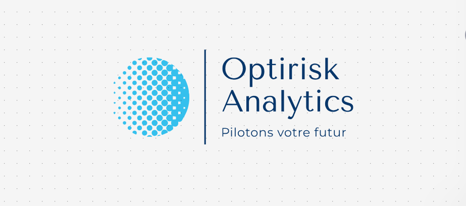

Optirisk Analytics - la liberté de pouvoir piloter votre avenir
Optirisk - Faire le choix de piloter votre futur
Chez OptiRisk Analytics, nous croyons que chaque entreprise mérite de disposer des outils nécessaires pour piloter son avenir avec confiance. Nous mettons un point d’honneur à offrir des solutions sur mesure pour aider les entreprises à optimiser leurs performances financières, analyser leurs flux de trésorerie, et anticiper les risques potentiels. Notre objectif est simple : fournir aux dirigeants une vision claire et en temps réel de leurs indicateurs clés de performance, leur permettant de prendre des décisions stratégiques éclairées. Grâce à une expertise pointue combinant finance quantitative et innovation technologique, OptiRisk Analytics ne se contente pas de fournir des données. Nous transformons vos chiffres en opportunités, en plaçant l'autonomie et la transparence au cœur de notre démarche.

Un parcours professionnel riche et international
Après plusieurs années passées dans les salles de marché des plus grandes banques françaises, notamment à Paris et à New York, j’ai acquis une solide expérience dans le développement d'outils financiers et l’analyse des risques. À Société Générale Americas, j’ai travaillé au cœur de Wall Street, sur la certification des métriques de risques et la création de solutions automatisées pour le reporting. Cette immersion dans des environnements dynamiques et exigeants m’a permis de développer une expertise unique en gestion des risques et en optimisation de la performance. Mon passage par des institutions comme BNP Paribas et AXA a également renforcé mes compétences en transformation digitale et en pilotage stratégique.
Un double parcours académique d’excellence
Mon parcours académique reflète mon ambition de toujours repousser les limites de mes compétences. Diplômé de l’ESILV en ingénierie financière, j’ai ensuite obtenu un Executive Master en Finance Quantitative délivré par deux institutions parmi les plus prestigieuses : l’Université Paris Dauphine et l’ENSAE Paris. Ce double diplôme a été obtenu tout en travaillant, illustrant ma capacité à conjuguer rigueur professionnelle et engagement académique. À travers cette formation, j’ai approfondi des domaines comme la gestion des risques, les produits financiers complexes, et les modélisations avancées, des piliers qui soutiennent aujourd’hui l’approche d’OptiRisk Analytics.